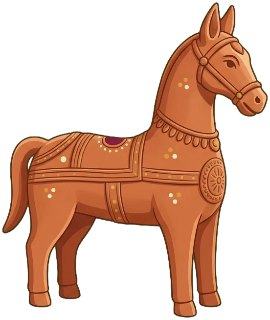
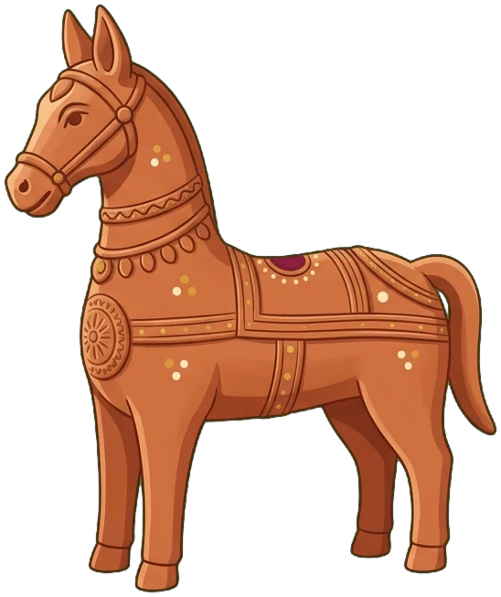
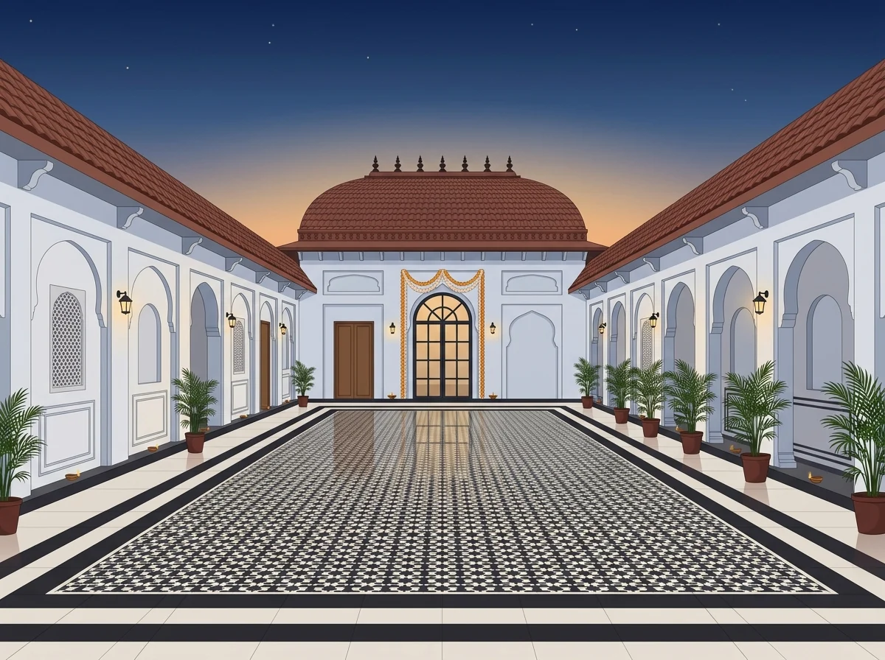

बारात की धूम
Baraat
Thursday, 26th November 2026
6:30 PM
Aamantran by Mysore Mahal · Jaipur
शुभ विवाह
26 November 2026
Aamantran by Mysore Mahal · Jaipur
Mrs Anita and Mr Naresh Agarwal
Brother of Muskan
Taluka Family
Mrs Ruchi and Mr Akhil Chaudhry
Sister of Ishita
Garg Family


With the blessings of our elders, two families become one. Join us in Jaipur on the 26th of November, and bless Apoorv and Arushi with your love as they begin their life together.
Baraat
Thursday, 26th November 2026
6:30 PM
Aamantran by Mysore Mahal · Jaipur
Reception
Thursday, 26th November 2026
8:00 PM onwards
Aamantran by Mysore Mahal · Jaipur
Pheras
Thursday, 26th November 2026
Midnight
Aamantran by Mysore Mahal · Jaipur
Jaipur in late November is around 25°C by day and close to 10°C after dark, so bring a shawl or jacket for the evenings.
Reception · 8 PM
Your festive best for the grand evening. It turns cool after dark, so bring a layer.
Palette
Jaipur, Rajasthan

Aamantran by Mysore Mahal
Mysore Palace, 5 Roshan Nagar, near Kanakpura,
Sirsi Road, Jaipur, Rajasthan 302012
Landmark: Pink City College, by Kanakpura railway station
About 30 minutes by car from Jaipur International Airport (JAI), and a short drive from Jaipur Junction. Kanakpura is the nearest local railway station.
Valet parking at the venue, with space for around 1,000 cars.
Plans changed, or replying for someone else?
Or reach us on +91 98280 17487 or +91 98181 95741
Go early, before the crowds and the midday sun, and don’t miss the Sheesh Mahal, the hall of mirrors.
The Palace of Winds and its 953 little windows. Best seen in morning light from a rooftop café across the road.
The royal residence, and next door the old observatory with the world’s largest stone sundial.
The most colourful gateway in the city, painted from floor to ceiling. Bring your camera.
The hilltop fort where the whole Pink City turns gold at dusk.
Johari Bazaar for jewellery, Bapu Bazaar for juttis and block prints. Refuel with a pyaaz kachori at Rawat Mishthan Bhandar.